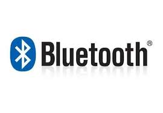
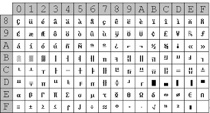
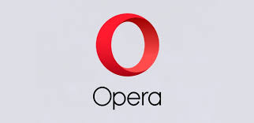

Diccionario de sistemas
Esta pagina tiene como fin ver definiciones de ciertos terminos que vemos y usamos día a día pero no sabemos realmente ni que son ni para que se utilizan realmente solo los vemos en nuestros dispositivos como en una pagina o en una aplicacíon o realmente gracias a que funciona nuestro pc, o que es un pc. Tantas preguntas y realmente tenemos pocas respuestas ante esto.
Acceso directo
Un Acceso Directo es una carpeta o archivo por medio del cual se puede ingresar de forma rápida o “Directa” hacia un programa, fichero o una página web. Lo creamos porque queremos ingresar rápidamente a cualquiera de estas herramientas, por tal motivo están generalmente en el escritorio de un ordenador.
Adobe
En sistemas es una empresa de software, fundada en 1982 por John Warnock y Charles Geschke cuando salieron de Xerox Parc. Son los creadores de PDF, y de programas como Photoshop, Ilustrador, Acrobat, entre otros. Sitio web: www.adobe.com
Algoritmo
Define el conjunto de instrucciones que sirven para ejecutar una tarea o resolver un problema. Los motores de búsqueda usan algoritmos para mostrar los resultados de búsquedas.
Ancho de banda
Bandwidth en inglés. Cantidad de bits que pueden viajar por un medio físico (cable coaxial, par trenzado, fibra óptica, etc.) de forma que mientras mayor sea el ancho de banda más rápido se obtendrá la información.
Android
Android es una plataforma abierta para teléfonos móviles que fue desarrollado por Google y por el Open Handset Alliance. Google define a Android como un "grupo de programas" (software stack) Para teléfonos móviles.
Antivirus
Programa cuya finalidad es prevenir los virus informáticos así como curar los ya existentes en un sistema. Estos programas deben actualizarse periódicamente
Apple
Empresa fundada en 1976 por Steve Wozniak y Steve Jobs, pionera de tecnología, que cuenta con una extensa linea de productos como computadoras de escritorio y laptops (ej. Macbook Pro, Mac Air), reproductores de Mp3 (ej. iPod Touch, iPod Nano), tablets PC (iPad), tiendas de software (app store) y música en línea (itunes) entre otros.
Archivo
Archivo es el equivalente a "file", en inglés. Es data que ha sido codificada para ser manipulada por una computadora. Los archivos de computadora pueden ser guardados en CD-ROM, DVD, disco duro o cualquier otro medio de almacenamiento.
Bandeja de entrada
Buzón de entrada. Carpeta de un programa de e-mail donde aparecen los mensajes recibidos
Base de datos
Conjunto de datos que pertenecen al mismo contexto almacenados sistemáticamente. En una base de datos, la información se organiza en campos y registros. Los datos pueden aparecer en forma de texto, números, gráficos, sonido o vídeo.
Bit
Dígito Binario. Unidad mínima de almacenamiento de la información cuyo valor puede ser 0 ó 1 (falso o verdadero respectivamente). Hay 8 bits en un byte.
Bluetooth
Estándar de transmisión de datos inalámbrico vía radiofrecuencia de corto alcance (unos 10 metros).
Browser
Aplicación para visualizar todo tipo de información y navegar por el www con funcionalidades plenamente multimedia. Como ejemplo de navegadores tenemos Internet Explorer, Firefox, Chrome y Safari.
Caracter
Número, letra o símbolo en la computadora, conformado por un byte.
Carpeta
Espacio del disco duro de una computadora cuya estructura jerárquica en forma de árbol contiene la información almacenada en una computadora, habitualmente en archivos y es identificado mediante un nombre.
CD
Compact Disc. Disco Compacto. Disco óptico de 12 cm de diámetro para almacenamiento binario. Su capacidad es de aprox. 750 MB y puede ser usado para almacenar cualquier tipo de data, desde música, videos, divx, mp3, archivos en general, etc.
Comprimir
Reducir el tamaño de un archivo o de un conjunto de archivos para que ocupen menos espacio en disco y se transmitan a mayor velocidad.
Correo electronico
Servicio de internet que permite el intercambio rápido de mensajes entre personas remotas que no necesariamente han de estar conectadas a la vez. Para poder hacer uso, ambas personas deben disponer de una cuenta, ofrecida por un proveedor de estos servicios.
CPU
Unidad central de proceso de un ordenador. Es la parte a la que llega la información desde los periféricos de entrada, ejecuta las tareas y devuelve los resultados a los periféricos de salida.
Chat
Término utilizado para describir la comunicación de usuarios en tiempo real. Comunicación simultánea entre dos o más personas a través del Internet.
Chrome
Navegador creado por Google. Según sus creadores, empezaron desde cero sin seguir patrones, e hicieron un navegador mejor adaptado a tecnologías más recientes para aplicaciones web.
Dato
Navegador creado por Google. Según sus creadores, empezaron desde cero sin seguir patrones, e hicieron un navegador mejor adaptado a tecnologías más recientes para aplicaciones web.
Descargar
Transferir información desde un ordenador de la red Internet al ordenador propio. También se le suele llamar "bajar" o "download".
Disco duro
Disco que se encuentra en el interior de la CPU y que almacena, tanto la información generada por el usuario, como los archivos necesarios para que los programas funcionen. Se le identifica por la letra C en el sistema operativo

Dispositivos de almacenamiento
Dispositivos en los que se almacena la información generada por el usuario y por los programas. Pueden ser internos, como el disco duro, o externos, como el disquete, el CD o pen-drive.
Disquete
Disco que permite almacenar hasta 1,44 MB de información. Cada vez se usa menos. Para utilizarlo es necesario que el ordenador disponga de disquetera.
DVD
Dispositivo de almacenamiento externo en forma de disco óptico que sólo permite la lectura de datos (no la escritura) en nuestro equipo. Es el idóneo para almacenar vídeo
DVR
Siglas del inglés Digital Video Recorder (Grabadora Digital de Video). Es un aparato que graba video o TV en formato digital. Con un DVR se puede poner pausa y retroceder a un programa de televisión en vivo por ejemplo, ya que se graba.
Encabezado
En muchas disciplinas de la ciencia de la computación, un encabezado es una unidad de información que precede a un objeto de datos.
Enlace
Elemento de una página web que da acceso a otro documento (o a otra parte del mismo documento) al hacer clic sobre él con el botón izquierdo del ratón. Es la base del acceso a la información en la World Wide Web.
Emoji
Símbolo gráfico el cual normalmente representa una cara feliz, triste, seria, alegre y diversas expresiones que permiten que una persona pueda mostrar su estado de ánimo en un medio "frío" como es el email o la mensajeria instantánea.
El e-mail o email, del inglés electronic mail (correo electrónico), ha sido uno de los medios de comunicación de más rápido crecimiento en la historia de la humanidad.
Excel
Programa de Microsoft, el cual consiste en una hoja de cálculo, utilizada para realizar fórmulas matemáticas y cálculos aritméticos exhaustivos, o simplemente bases de datos con menos de 65mil registros
Explorer
Microsoft Internet Explorer. Navegador de la empresa Microsoft que, a partir de Windows98, viene integrado al sistema operativo.
Fibra óptica
Tipo de cable que se basa en la transmisión de información por técnicas optoeléctricas mediante una combinación de vidrio y materiales plásticos.

Firefox
Mozilla Firefox (originalmente conocido como Phoenix y Mozilla Firebird) es un navegador de web gráfico, gratuito, de código abierto, desarrollado por la Fundación Mozilla y miles de colaboradores en el mundo. La versión 1.0 salio el 9 de noviembre de 2004.
Flash
Creado por Macromedia, esta tecnología permite la creación de animaciones, entre otras cosas, utilizando menos ancho de banda que otros formatos, como AVI o MPEG.
Frames
Opción que ofrece el lenguaje HTML de dividir una página web en varias zonas. Cada una de las cuales puede tener un contenido independiente de las demás de forma que cada zona es asimismo un frame.
GIF
Siglas del inglés Graphics Interchange Format, es un tipo de archivo binario que contiene imágenes comprimidas.
Gigabyte
El gigabyte (GB) equivale a 1.024 millones de bytes, o 1024 Megabytes.
Gmail
Gmail es el servicio de email (correo electrónico) gratis, de Google. http://www.gmail.com
Gogle
Buscador de páginas web en Internet (y el más popular por el momento). Introduce páginas web en su base de datos por medio de robots (a los robots de google se le conocen como googlebots). Sitio web: www.google.com
GPS
Global Positioning System. Sistema de localización geográfica vía satélite capaz de dar la localización de una persona u objeto dotado de un transmisor-receptor GPS con una precisión mínima de 10 metros.
Hacker
Persona que tiene un conocimiento profundo acerca del funcionamiento de redes de forma que puede advertir los errores y fallas de seguridad del mismo.
Hardware
Maquinaria. Componentes físicos de una computadora o de una red (a diferencia de los programas o elementos lógicos que los hacen funcionar).
HDMI
Acrónimo del ingles "High-Definition Multimedia Interface" (Interfaz Multimedia de Alta Definición)
Header
Parte inicial de un paquete que precede a los datos propiamente dichos y que contiene las direcciones del remitente y del destinatario, control de errores y otros campos
Host
Servidor que nos provee de la información que requerimos para realizar algún procedimiento desde una aplicación cliente a la que tenemos acceso de diversas formas (ssh, FTP, www, email, etc.).
Hotmail
Uno de los más populares sitios que otogran cuentas de email gratis (@hotmail.com), cuenta con millones de usuarios a nivel mundial. Fue comprado por MSN Networks, empresa miembro del grupo Microsoft. Su URL es http://www.hotmail.com
HTML
Siglas del inglés Hypertext Markup Language (Lenguaje de Marcado Hipertexto). Es un lenguaje para crear documentos de hypertexto para uso en el www o intranets, por ejemplo.
HTTPS
Creado por Netscape Communications Corporation para designar documentos que llegan desde un servidor web seguro.
impresora
Periférico que pasa la información de una computadora a un medio físico, que usualmente es el papel.
Ingeniero de sistemas
Un ingeniero de software es un profesional licenciado que tiene el conocimiento en la aplicación de disciplinas de ingeniería para la creación de software.
Inteligencia artificial
Simulación de los procesos de la inteligencia humana, por medio de sistemas de computación. El término lo creó John McCarthy en 1956 en el MIT (Massachusetts Institute of Technology).
Internet
Una red mundial, de redes de computadoras. Es una interconexión de redes grandes y chicas alrededor del mundo.
Internet explorer
Conocido también como IE es el browser web de Microsoft. Fue lanzado al mercado por primera vez en 1995 junto con las distribuciones de Windows.
Java
Lenguaje de programación que permite ejecutar programas escritos en un lenguaje muy parecido al C++. Se diferencia de un CGI ya que la ejecución es completamente realizada en la computadora cliente, en lugar del servidor.

JavaScript
Lenguaje desarrollado por Sun Microsystems en conjunto con Netscape; aunque es parecido a Java se diferencia de él en que los programas están incorporados en el archivo HTML.
JPG
Los datos de una imagen pueden ser grabados en diferentes formatos. El jpg es, sin duda, el formato más popular.
kbpts
Kilobits por segundo. Unidad de medida que comúnmente se usa para medir la velocidad de transmisión por una línea de telecomunicación, como la velocidad de un cable modem por ejemplo
Key
Serie de signos previamente convenidos que sirven como clave o fórmula para transmitir mensaje secretos o privados.
Kilobyte
Unidad de medida equivalente a 1024 (dos elevado a la 10) bytes. Se usa frecuentemente para referirse a la capacidad de almacenamiento o tamaño de un archivo. Su unidad símbolo es kB.
LAN
Local Area Network. Red de área local. Red de computadoras personales ubicadas dentro de un área geográfica limitada que se compone de servidores, estaciones de trabajo, sistemas operativos de redes y un enlace encargado de distribuir las comunicaciones.
Laptop
Computadora portátil que pesa desde 1 a 3 libras, que pueden ser cargadas en el regazo (lap en inglés).
Linux
Es una versión de libre distribución del sistema operativo basada en UNIX.
Lenguaje de programcaión
Es un vocabulario y conjunto de reglas gramáticas para instruir a una computadora sobre cómo realizar tareas específicas
Link
Enlace, puntero, vínculo. Imagen o texto destacado, mediante subrayado o color, que lleva a otro sector del documento o a otra página Web.
Login
Clave de acceso que se le asigna a un usuario con el propósito de que pueda utilizar los recursos de una computadora
Malware
Cualquier programa cuyo objetivo sea causar daños a computadoras, sistemas o redes y, por extensión, a sus usuarios.
Mebibyte
1 mebibyte son 1048576 bytes. El símbolo de la unidad es MiB.
Microsoft
Fundada en 1975 por Bill Gates, entre otros. Responsable de los sistemas operativos Windows XP y Vista, del grupo de programas Office (Word, Excel, Powerpoint), de los controles Active X, del navegador Internet Explorer entre muchos otros programas
Modem
Equipo que permite conectar computadoras por medio de una llamada telefónica, mediante procesos denominados modulación (para transmitir información) y demodulación (para recibir información).
MP3
MP3 es un popular formato de audio comprimido que ayudó a popularizar la ola de descargar música digital a finales de los 1990s.
Nanotecnologia
Es un campo de la ciencia cuyo objetivo es controlar los átomos y moléculas individuales y crear chips de computadoras y otros dispositivos que sean miles de veces más chicos que lo que permite las actuales tecnologías.
Network
Aquellas series de ordenadores o dispositivos informáticos que se conectan por medio de cables, ondas, señales u otros mecanismos con el propósito de transmitir datos entre sí, además de recursos y servicios
Notebook
Son computadoras personales de muy poco peso. Normalmente son tan livianas y pequeñas como para caber un pequeño maletín.
Online
Término en inglés que literalmente se traduce al español como "en línea". Se refiere a estar conectado a una red (usualmente se usa para el internet).
Opera
Navegador de Internet, de origen noruego. Eficiente y mucho más pequeño que Netscape Navigator y Explorer.
Onedrive
Es el nombre que recibe un servicio online de la empresa Microsoft que permite almacenar archivos en línea (almacenamiento en nube) para que el usuario pueda acceder a estos desde cualquier dispositivo conectado a internet.
Pantalla plana
Es una pantalla muy delgada usada en computadoras portátiles. Casi todas las pantallas planas usan tecnologías LCD.
Portable Document Format (Formato de Documento Portable), formato gráfico creado por la empresa Adobe el cual reproduce cualquier tipo de documento en forma digital idéntica, permitiendo así la distribución electrónica de los mismos a través de la red en forma de archivos PDF.
php
Hypertext Preprocessor. Lenguaje de script diseñado para la creación de páginas web activas (similares a ".asp" de Microsoft), multiplataforma (puede correr en Windows, Mac, Linux). Usualmente se usa en conjunto con la base de datos MySQL, pero puede usar cualquier otro tipo de base de datos como por ejemplo Oracle, SQL o Postgres.
Píxel
El componente más pequeño y discreto de una imagen en un monitor o pantalla. Es un punto minimo.
Quad-core
Los CPU con Quad-core tienen 4 núcleos procesadores. Estos núcleos actúan como procesadores separados, pero residen en un solo chip.
QWERTY
Es la forma como se le denomina al tipo de teclado que más se usa en la actualidad. El nombre viene de la forma como están distribuidas las letras y los caracteres. Las teclas en la fila superior debajo de los números forman la palabra QWERTY al leerlas de izquierda a derecha.
RAM
Random Access Memory (memoria de acceso aleatorio), es la memoria temporal, que se borra apenas se apaga la computadora.
Realidad virtual
Término futurista el cual pretende describir la interacción de los seres humanos en mundos virtuales o simulados creados por programas como el VMRL.
Red
Sistema de comunicación de datos que conecta entre sí sistemas informáticos situados en lugares más o menos próximos. Puede estar compuesta por diferentes combinaciones de diversos tipos de redes.
ROM
Read Only Memory (memoria de solo lectura); de esta memoria, solo se puede leer pero no modificar.
Software
Es todo programa o aplicación programada para realizar tareas específicas. El término "software" fue usado por primera vez por John W. Tukey en 1957.
Tablet
Es un tipo de computadora notebook que tiene una pantalla LCD sobre la cual el usuario puede escribir usando un lápiz especial, el stylus.
Tarjetas de memoria
Estos dispositivos son los responsables de extenderle la capacidad a las computadoras portátiles y demás tipos de objetos digitales móviles.
Tarjeta madre
Mother board en ingles. Es una tarjeta de circuitos integrados que contiene varios microchips, como lo son normalmente: el microprocesador, circuitos electrónicos de soporte, ranuras para conectar parte o toda la RAM del sistema, la ROM y ranuras especiales (slots) que permiten la conexión de tarjetas adaptadoras adicionales (como por ejemplo, tarjetas de video y de sonido).
Unidad de control
Es en esencia la que gobierna todas las actividades de la computadora, así como el CPU es el cerebro de la computadora, se puede decir que la UC es el núcleo del CPU.
Update
Tipo de consulta en base de datos que se encarga de actualizar los datos en los campos de las tablas.
Upgrate
Nombre en inglés que reciben las nuevas versiones de una aplicación o un hardware y son diseñadas para reemplazar una versión previa del mismo producto.
URL
Acrónimo de Uniform Resource Locator. Localizador Uniforme de Recurso. Es el sistema de direcciones en Internet. El modo estándar de escribir la dirección de un sitio especifico o parte de una información en el Web.
USB
Universal Serial Bus. Estándar utilizado en las PCs con el fin de reconocer los dispositivos hardware (impresora, teclado, etc.) y ponerlos en funcionamiento de forma rápida y sencilla. Elimina la necesidad de instalar adaptadores en la PC.
Virus
Programa que se duplica a sí mismo en un sistema informático incorporándose a otros programas que son utilizados por varios sistemas.
Visual Basic
Lenguaje de programación de Microsoft orientado a eventos y utilizado principalmente para realizar consultas a bases de datos de Microsoft como Fox Pro, SQL, etc. que funcionan en servidores Windows.

Wallpaper
Es computadoras que usan interfaces gráficas de escritorio, es la foto u otra representación gráfica que forma el fondo sobre el que se disponen y mueven todos los íconos, menús y otros elementos del sistema operativo.
Wifi
Abreviatura en inglés para "wireless fidelity". Un tipo de red inalámbrica (WLAN - wireless local area networks), que usa el protocolo inalámbrico de alcance limitado IEEE 802.11b, que transmite datos en banda ancha en el rango espectral de 2.4 GHz.
Windows
Sistema operativo desarrollado por la empresa Microsoft cuyas diversas versiones (3.1, 95, 98, NT, 2000, XP, Vista, 7) han dominado el mercado de las computadoras personales, aunque no se puede decir lo mismo del mercado de redes corporativas.
Yahoo!
Es una empresa prestadora de múltiples servicios en Internet, una de las más populares del mundo. Originalmente un buscador, actualmente se ha convertido en un portal con servicios de todo tipo.
Youtube
Sitio web con millones de videos que provienen de cualquiera que tenga una camara digital en adelante. Fue adquirido por Google en 2006 por sumas astronomicas de dinero. En nuestro concepto, valio la pena. Youtube.com.
Zettabyte
Unidad de medida de capacidad de almacenamiento que equivale a 270 bytes, o sea unos 1021 (1.000.000.000.000.000.000.000) bytes. Un zettabyte es igual a 1024 exabytes.
Zip
Extensión y formato de los archivos comprimidos con herramientas que usan este sistema, como el Winzip en Windows, PKZIP en DOS, MacZip en Macintosh, Zip y UnZip para UNIX, etc.
Zoom
Extensión y formato de los archivos comprimidos con herramientas que usan este sistema, como el Winzip en Windows, PKZIP en DOS, MacZip en Macintosh, Zip y UnZip para UNIX, etc.